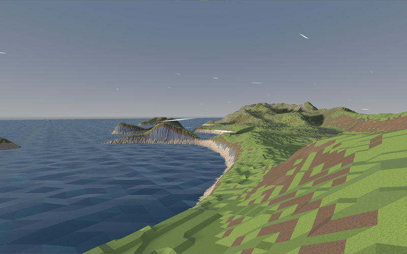
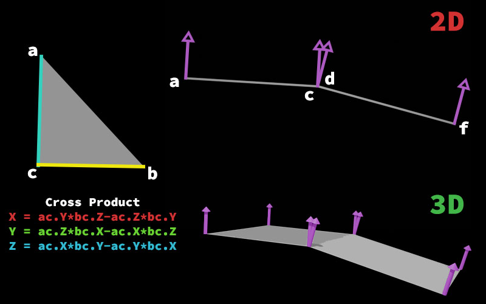
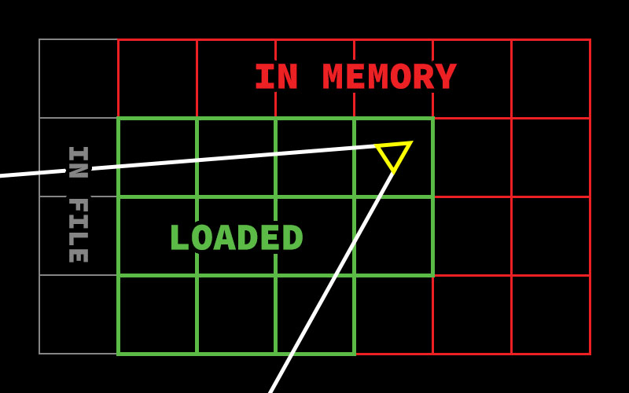
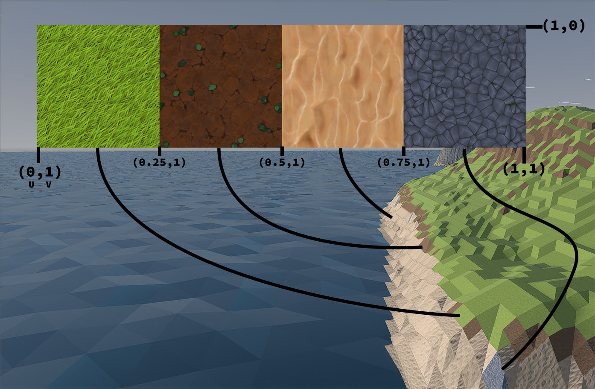

The Math behind Mesh Generation

TL;DR:
-
Mathematical and practical aspects of mesh generation in computer
graphics.
- Use of the cross product for calculating normals.
- Efficient map generation through chunking.
- Application of UV mapping.
- Evolution of techniques and methodologies.
- Importance of self-learning and community support.
Key Skills Learned:
- Advanced problem-solving and critical thinking.
- Proficiency in 3D modeling and mesh generation.
- Expertise in optimizing rendering processes.
- Ability to implement complex mathematical concepts.
-
Effective use of community resources for learning and
collaboration.
Introduction
Mesh generation is a cornerstone of computer graphics, particularly in game design. This document serves as a comprehensive record of my work, intended to showcase my skills and knowledge. By exploring the mathematical concepts and practical applications of mesh generation, I aim to highlight my ability to create, manipulate, and render complex digital environments.
Mathematical Concepts: The Cross Product
Understanding Normals
A key component of mesh generation is the cross product, a mathematical operation essential for calculating the normals of a mesh. Normals, which are vectors perpendicular to the surface, play a crucial role in determining how light interacts with a surface.
From 2D to 3D
To make these concepts accessible, I begin with simple 2D side-view examples before transitioning to more complex 3D scenarios. Imagine two vectors, a and c, lying in a flat 2D plane. When calculating the cross product of these vectors, the result is a vector perpendicular to the plane they define. While this concept is easier to visualize in 2D as a single upward or downward direction, it becomes the foundation for understanding cross products in 3D.
For instance, in 3D geometry, when two vectors lie on a plane and you compute their cross product, the resulting vector is perpendicular to that plane. This perpendicular vector is calculated using the following equations:
A visual aid illustrating the cross product in both 2D and 3D environments will help bridge the gap between theory and practice.
When working with 3D models, such as a sphere, visible individual triangles can disrupt the visual smoothness. To address this, you can compute the average of the normal vectors at a shared vertex (where triangles meet). Averaging the normals results in a smoother appearance by softening the transitions between the connected triangles. After averaging, the resulting vector is normalized to ensure it retains unit length, preserving its original direction and consistency in lighting calculations.
In 3D geometry, the process becomes more intricate due to the possibility of multiple intersecting planes at a single vertex. Each plane contributes a normal vector, and these normals must be averaged for the vertex. This involves iterating through the mesh, recalculating and normalizing the new vertex normals to replace the old ones. A rendering engine, often using GLSL (OpenGL Shading Language), interpolates between these normals across the triangle surfaces, creating smooth shading.
This approach, commonly referred to as smooth lighting or smooth shading, enhances realism by eliminating sharp edges between polygons. However, in my game, which features a stylized, cartoony aesthetic, smooth shading isn't necessary. Instead, I implemented 3D normal vector calculations using the cross product as shown above. This method aligns with the game's visual style while ensuring accurate geometry handling.
Latest Approach to Map Generation
Efficiency and Performance
My latest approach to map generation emphasizes efficiency and performance. By implementing a chunking technique, I can generate maps in segments, significantly reducing load times and enhancing frame rates.
Achieving High Frame Rates
This method optimizes the rendering process and ensures the system can handle complex environments with ease, achieving a frame rate of up to 1,500 FPS on a 1024 by 1024 map. If a chunk is behind the camera, it completely deletes any visual rendering information for that chunk, saving it into memory. If the chunk moves too far away from the camera, it saves the data to a file, allowing it to be loaded later.
An image illustrating the chunking technique used in map generation will provide clarity on this process.
Vertices, Normals, and UV Mapping
Defining Mesh Points
Defining mesh points is a critical step in the creation of a digital landscape. Each mesh is composed of vertices, which are the fundamental building blocks of 3D models. These vertices are defined in a coordinate system, typically using x, y, and z coordinates to specify their position in 3D space. The process begins by determining the shape and size of the mesh, which involves calculating the positions of each vertex. This can be done manually for simple shapes or algorithmically for more complex structures.
Once the vertices are defined, they are connected to form edges and faces, creating the mesh's geometry. The precision in defining these points is crucial, as it affects the mesh's overall appearance and how it interacts with light and textures. In my work, I focus on ensuring that each vertex is accurately placed to maintain the integrity of the mesh's shape and to facilitate smooth rendering.
Applying Textures
Applying textures to a mesh involves a process known as UV mapping, which is crucial for adding detail and realism to 3D models. Central to this process are the UV coordinates, which map the 2D texture onto the 3D model. Each vertex of the mesh is assigned a UV coordinate, which corresponds to a point on the texture. This mapping ensures that the texture aligns correctly with the model's geometry.
The UV coordinates are typically represented as (U, V) pairs, where U and V are the horizontal and vertical axes of the texture map, respectively. These coordinates are crucial for determining how the texture is wrapped around the model. By adjusting the UV coordinates, you can control the scale, rotation, and position of the texture on the model.
A diagram showing how UV coordinates align with a texture in my game.
Reflections on Initial Attempts
Early Challenges
Reflecting on my initial attempts at mesh generation, I encountered challenges that shaped my current methodologies. Initially, I tried an approach where I created a mesh for each possible configuration of a slope. This method proved to be inefficient, especially when I wanted to create something more complex than a simple voxel map generation. The complexity and resource demands of this approach highlighted the need for a more dynamic and flexible system.
Learning from Limitations
The adoption of a multi-mesh instance approach, while initially promising, revealed limitations in load times and performance. These experiences underscore my commitment to continuous refinement and adaptation.
The Importance of Self-Learning
Beyond Tutorials
A key takeaway from my journey is the significance of self-learning and critical thinking. While tutorials offer a foundation, true understanding comes from exploring beyond prescribed instructions.
Community Engagement
Engaging with communities, such as the Godot Cafe, has been instrumental in my development, providing a platform for collaboration and problem-solving. The support and insights gained from these interactions have been invaluable in overcoming obstacles and advancing my skills.
Conclusion
In conclusion, this document encapsulates the evolution of my mesh generation strategies, highlighting the challenges, solutions, and insights gained along the way. By sharing my experiences, I aim to inspire others to embrace the complexities of game design and pursue their own paths of discovery. As I continue to refine and optimize my techniques, I remain committed to exploring new possibilities and pushing the boundaries of what can be achieved in the digital realm.